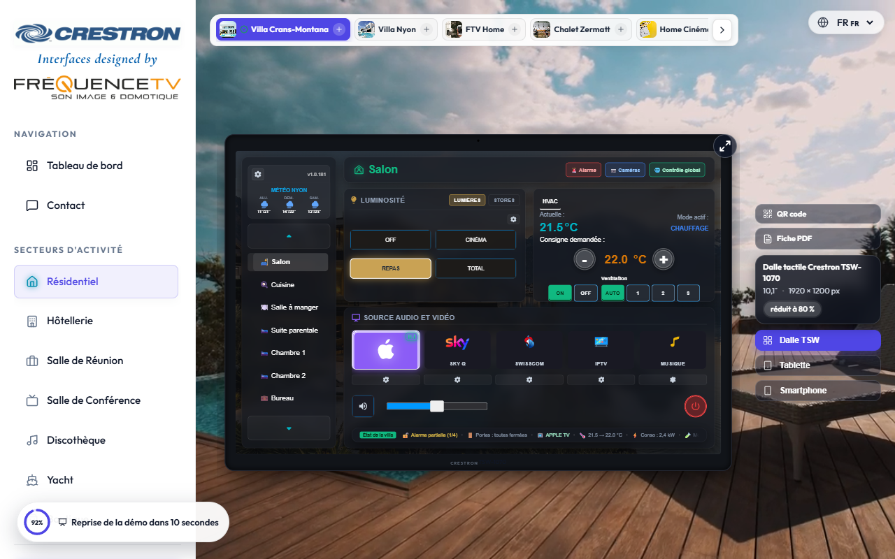
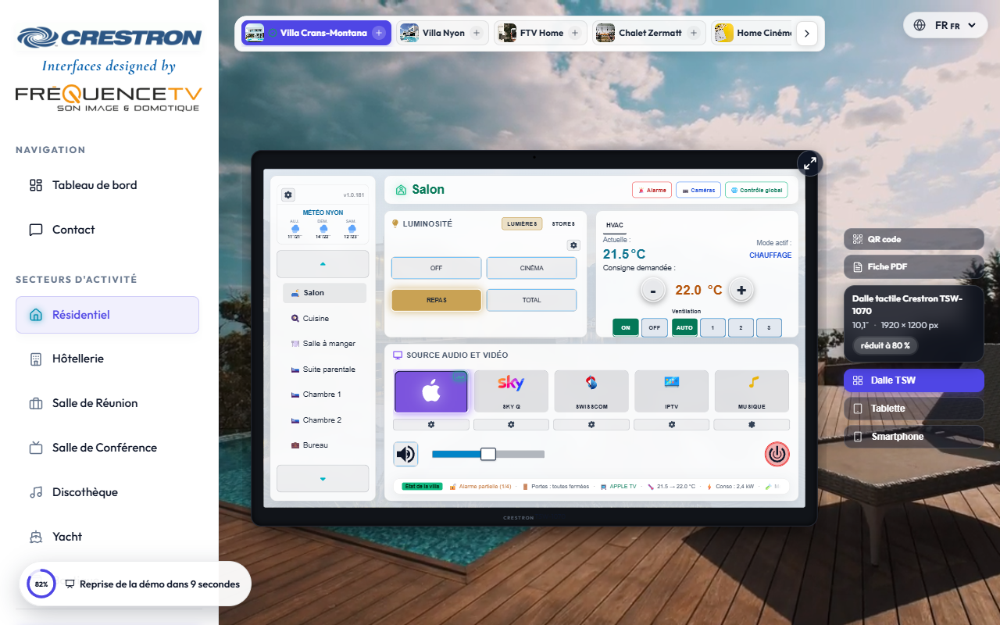
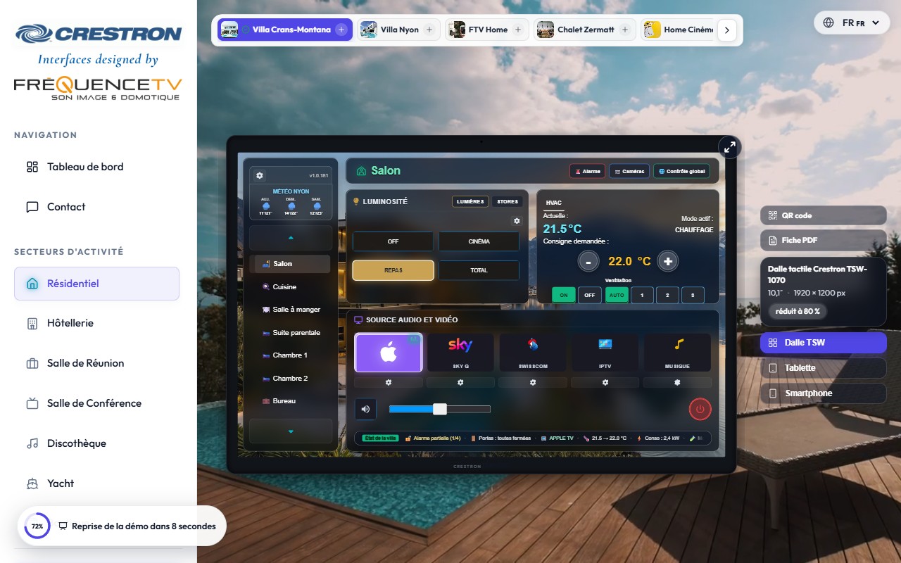
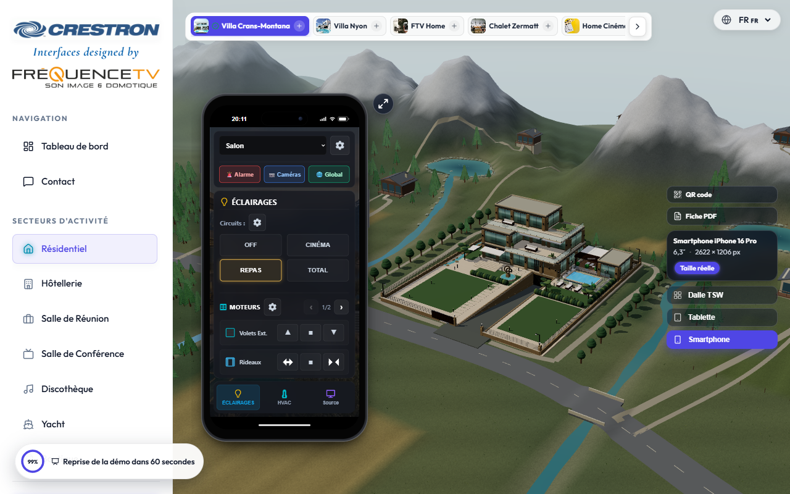
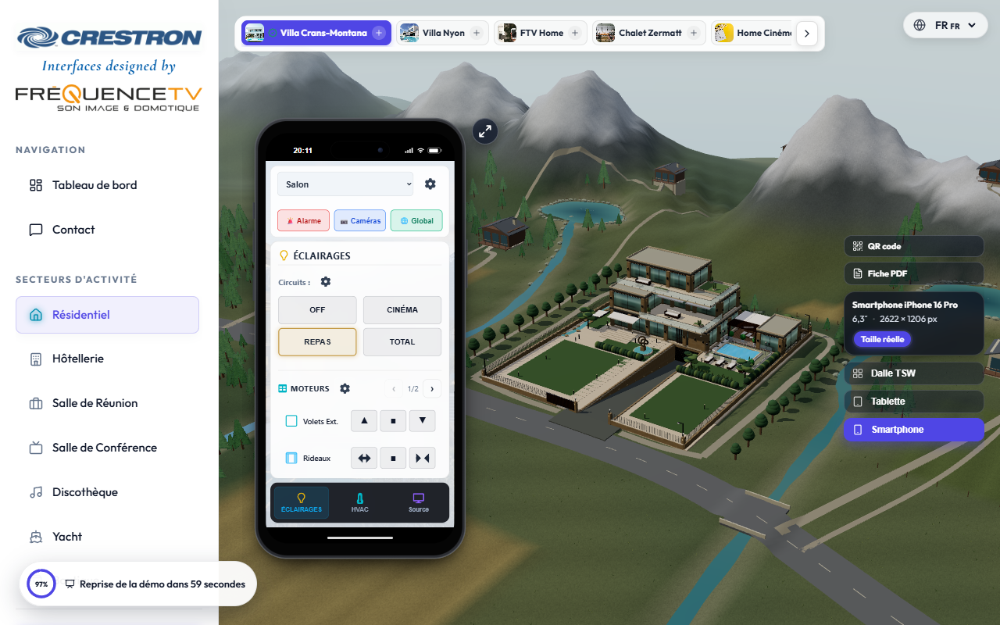
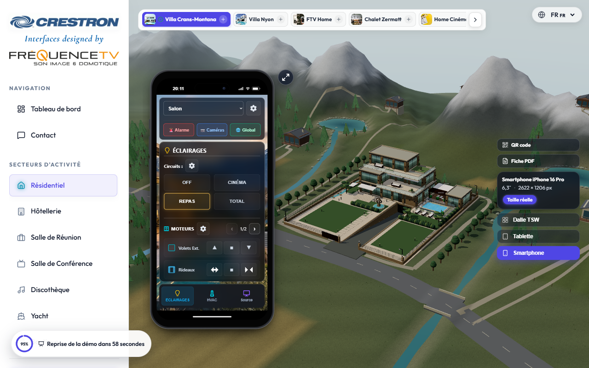

Avant : châssis TSW et délai d’inactivité. Après : Smartphone et introduction de la villa assemblée. Captures du 17 septembre 2026.
| Sombre | Clair | Verre dépoli | |
|---|---|---|---|
| Avant — production avant publication |  |  |  |
| Après — version locale |  |  |  |